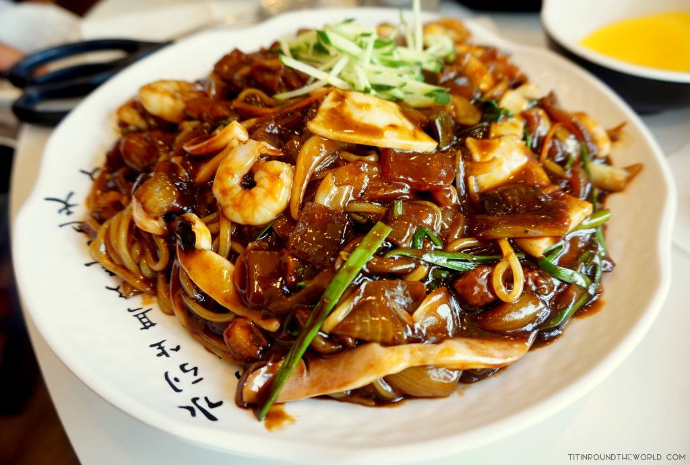

Gastronomía
La gastronomía coreana ha evolucionado con el paso de los siglos de cambio social y político. Originada de la agricultura antigua y de tradiciones nómadas en la península Coreana y el sur de Manchuria, la gastronomía coreana ha cambiado a través de interacciones complejas entre el entorno y las diferentes tendencias culturales.
La gastronomía coreana está principalmente basada en arroz, vegetales y carne. Las comidas coreanas tradicionales son conocidas por la gran variedad de guarniciones (반찬; banchan) que acompañan al arroz de grano pequeño cocido al vapor.
El Kimchi es casi siempre servido en los platillos. Los ingredientes más utilizados son aceite de sésamo, doenjang (pasta de judías fermentada), salsa de soya, sal, ajo, jengibre, hojuelas de pimienta, gochujang (pasta de chile rojo fermentada) y col china.
Los ingredientes y platillos varían por provincia. Muchos platillos regionales se han hecho nacionales, y platillos que fueron alguna vez regionales han proliferado con diferentes variaciones en todo el país.
La cocina de la corte real coreana en una ocasión juntó todas las especialidades regionales únicas para la familia real. Los platillos son regulados por la etiqueta cultural de Corea.